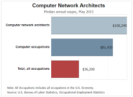

Network and computer systems administrator
Minimum degree required: Bachelor's
Years of experience required: 0
Good fit for:-
- Multitaskers with analytical mindsets
- Problem-solvers with strong communication and interpersonal skills
- IT professionals with broad technological skill sets
STATISTICAL OUTLOOK for network and computer system administrator:-
